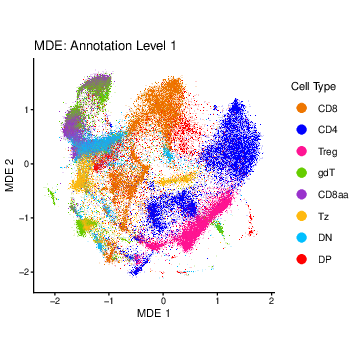
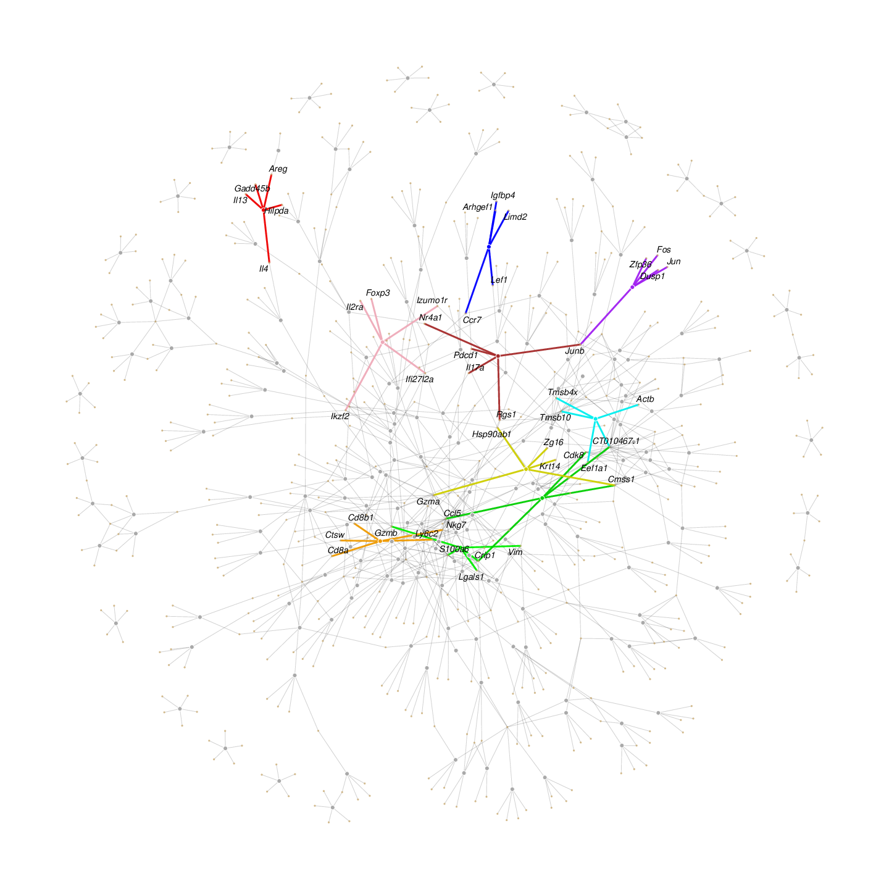
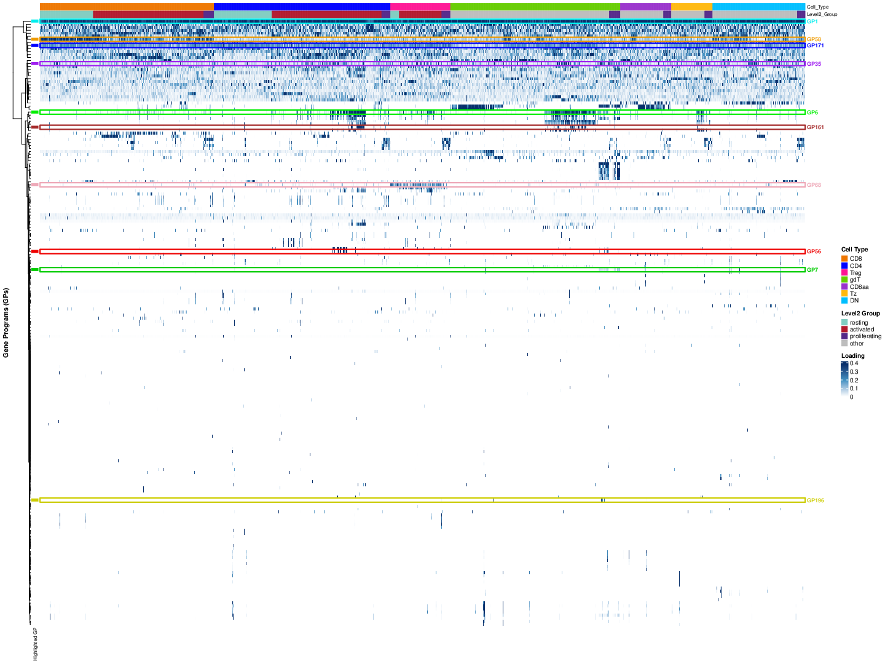
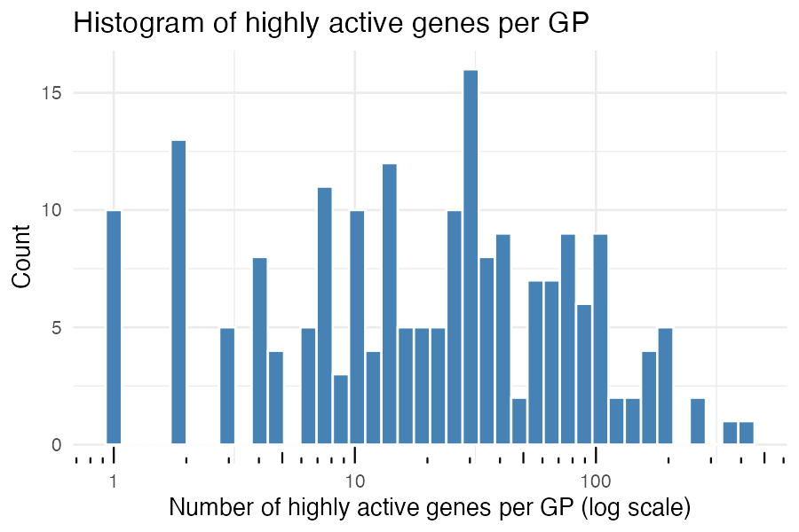
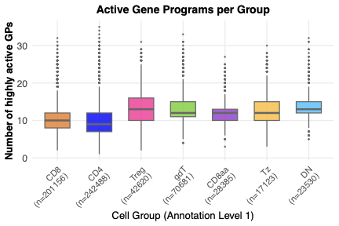
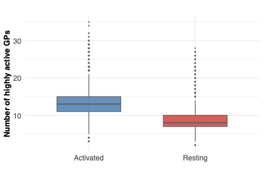
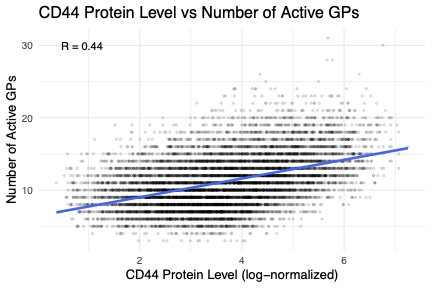

Last updated: 2026-07-02
Checks: 7 0
Knit directory:
immgenT-GP-analysis/analysis/
This reproducible R Markdown analysis was created with workflowr (version 1.7.2). The Checks tab describes the reproducibility checks that were applied when the results were created. The Past versions tab lists the development history.
Great! Since the R Markdown file has been committed to the Git repository, you know the exact version of the code that produced these results.
Great job! The global environment was empty. Objects defined in the global environment can affect the analysis in your R Markdown file in unknown ways. For reproduciblity it’s best to always run the code in an empty environment.
The command set.seed(1) was run prior to running the
code in the R Markdown file. Setting a seed ensures that any results
that rely on randomness, e.g. subsampling or permutations, are
reproducible.
Great job! Recording the operating system, R version, and package versions is critical for reproducibility.
Nice! There were no cached chunks for this analysis, so you can be confident that you successfully produced the results during this run.
Great job! Using relative paths to the files within your workflowr project makes it easier to run your code on other machines.
Great! You are using Git for version control. Tracking code development and connecting the code version to the results is critical for reproducibility.
The results in this page were generated with repository version be7d6ae. See the Past versions tab to see a history of the changes made to the R Markdown and HTML files.
Note that you need to be careful to ensure that all relevant files for
the analysis have been committed to Git prior to generating the results
(you can use wflow_publish or
wflow_git_commit). workflowr only checks the R Markdown
file, but you know if there are other scripts or data files that it
depends on. Below is the status of the Git repository when the results
were generated:
Ignored files:
Ignored: analysis/.DS_Store
Ignored: analysis/.Rhistory
Ignored: analysis/assets/.DS_Store
Ignored: code 2/
Ignored: data
Ignored: figures/final-selected/.DS_Store
Ignored: figures/final-selected/bits/.DS_Store
Ignored: figures/final-selected/bits/Figure 1/.DS_Store
Ignored: figures/final-selected/bits/Figure 2/.DS_Store
Ignored: figures/final-selected/bits/Figure 3/.DS_Store
Ignored: figures/final-selected/bits/Figure 4/.DS_Store
Ignored: figures/final-selected/bits/Figure 6/.DS_Store
Ignored: figures/final-selected/bits/Figure 7/.DS_Store
Ignored: figures/final-selected/bits/Figure S1/.DS_Store
Ignored: figures/final-selected/bits/Figure S2/.DS_Store
Ignored: figures/final-selected/bits/Figure S3/.DS_Store
Ignored: figures/final-selected/bits/Figure S6/.DS_Store
Ignored: figures/final-selected/bits/Figure S7/.DS_Store
Untracked files:
Untracked: analysis/assets/Figure1/hist_active_cells_per_GP.png
Untracked: analysis/assets/Figure1/hist_active_genes_prop_per_GP.png
Untracked: analysis/assets/Figure1/scatter_e_active_cells_vs_genes.png
Unstaged changes:
Modified: README.md
Modified: analysis/assets/Figure1/1A.png
Modified: analysis/assets/Figure1/1C.png
Modified: analysis/assets/Figure1/1D.png
Modified: analysis/assets/Figure1/1E.png
Modified: analysis/assets/Figure1/1F.png
Modified: analysis/assets/Figure1/1G.png
Modified: analysis/assets/Figure1/1H.png
Modified: analysis/assets/Figure1/1I.png
Modified: analysis/assets/Figure2/2A.png
Modified: analysis/assets/Figure2/2B.png
Modified: analysis/assets/Figure2/2C.png
Modified: analysis/assets/Figure2/2D.png
Modified: analysis/assets/Figure2/2E.png
Modified: analysis/assets/Figure2/2F.png
Modified: analysis/assets/Figure2/2G.png
Modified: analysis/assets/Figure2/2H.png
Modified: analysis/assets/Figure2/2I.png
Modified: analysis/assets/Figure2/2J.png
Modified: analysis/assets/Figure2/2K.png
Modified: analysis/assets/Figure2/2L.png
Modified: analysis/assets/Figure2/2M.png
Modified: analysis/assets/Figure3/3c.png
Modified: analysis/assets/Figure3/3d.png
Modified: analysis/assets/Figure3/3e.png
Modified: analysis/assets/Figure3/3f.png
Modified: analysis/assets/Figure3/3g.png
Modified: analysis/assets/Figure4/4a.png
Modified: analysis/assets/Figure4/4b.png
Modified: analysis/assets/Figure4/4c.png
Modified: analysis/assets/Figure4/4d.png
Modified: analysis/assets/Figure4/4e.png
Modified: analysis/assets/Figure6/6b.png
Modified: analysis/assets/Figure6/6c.png
Modified: analysis/assets/Figure6/6d.png
Modified: analysis/assets/Figure6/6e.png
Modified: analysis/assets/Figure6/6f.png
Modified: analysis/assets/Figure6/6g.png
Modified: analysis/assets/Figure6/6h.png
Modified: analysis/assets/Figure6/6i.png
Modified: analysis/assets/Figure6/6j.png
Modified: analysis/assets/Figure6/6k.png
Modified: analysis/assets/FigureS1/S1A.png
Modified: analysis/assets/FigureS1/S1B.png
Modified: analysis/assets/FigureS1/S1C.png
Modified: analysis/assets/FigureS1/S1D.png
Modified: analysis/assets/FigureS2/S2A.png
Modified: analysis/assets/FigureS2/S2B.png
Modified: analysis/assets/FigureS2/S2C.png
Modified: analysis/assets/FigureS3/s3c.png
Modified: analysis/assets/FigureS3/s3d.png
Modified: analysis/assets/FigureS3/s3e.png
Modified: analysis/assets/FigureS3/s3f.png
Modified: analysis/assets/FigureS3/s3g.png
Modified: analysis/assets/FigureS3/s3h.png
Modified: analysis/assets/FigureS6/s6-1.png
Modified: analysis/assets/FigureS6/s6-2.png
Modified: code/R/activation_shared_setup.R
Modified: code/R/cross_gp_helpers.R
Modified: code/R/gated_protein_helpers.R
Modified: code/R/lineage_plots.R
Modified: code/R/plot_utils.R
Modified: code/R/setup_data.R
Modified: code/R/tf_network.R
Modified: code/README.md
Modified: code/pipeline/01_extract_data.R
Modified: code/pipeline/02_compute_auc.R
Modified: code/pipeline/04_protein_projection.R
Modified: code/pipeline/05_igt_validation.R
Modified: figures/generated/Figure 1/1A.pdf
Modified: figures/generated/Figure 1/1C.pdf
Modified: figures/generated/Figure 1/1D.pdf
Modified: figures/generated/Figure 1/1E.pdf
Modified: figures/generated/Figure 1/1F.pdf
Modified: figures/generated/Figure 1/1G.pdf
Modified: figures/generated/Figure 1/1H.pdf
Modified: figures/generated/Figure 1/1I.pdf
Modified: figures/generated/Figure 1/hist_active_cells_per_GP.pdf
Modified: figures/generated/Figure 1/hist_active_genes_prop_per_GP.pdf
Modified: figures/generated/Figure 1/scatter_e_active_cells_vs_genes.pdf
Modified: figures/generated/Figure 2/2A.pdf
Modified: figures/generated/Figure 2/2B.pdf
Modified: figures/generated/Figure 2/2C.pdf
Modified: figures/generated/Figure 2/2D.pdf
Modified: figures/generated/Figure 2/2E.pdf
Modified: figures/generated/Figure 2/2F.pdf
Modified: figures/generated/Figure 2/2G.pdf
Modified: figures/generated/Figure 2/2H.pdf
Modified: figures/generated/Figure 2/2I.pdf
Modified: figures/generated/Figure 2/2J.pdf
Modified: figures/generated/Figure 2/2K.pdf
Modified: figures/generated/Figure 2/2L.pdf
Modified: figures/generated/Figure 2/2M.pdf
Modified: figures/generated/Figure 3/3c.pdf
Modified: figures/generated/Figure 3/3d.pdf
Modified: figures/generated/Figure 3/3e.pdf
Modified: figures/generated/Figure 3/3f.pdf
Modified: figures/generated/Figure 3/3g.pdf
Modified: figures/generated/Figure 4/4a.pdf
Modified: figures/generated/Figure 4/4b.pdf
Modified: figures/generated/Figure 4/4c.pdf
Modified: figures/generated/Figure 4/4d.pdf
Modified: figures/generated/Figure 4/4e.pdf
Modified: figures/generated/Figure 6/6b.pdf
Modified: figures/generated/Figure 6/6c.pdf
Modified: figures/generated/Figure 6/6d.pdf
Modified: figures/generated/Figure 6/6e.pdf
Modified: figures/generated/Figure 6/6f.pdf
Modified: figures/generated/Figure 6/6g.pdf
Modified: figures/generated/Figure 6/6h.pdf
Modified: figures/generated/Figure 6/6i.pdf
Modified: figures/generated/Figure 6/6j.pdf
Modified: figures/generated/Figure 6/6k.pdf
Modified: figures/generated/Figure S1/S1A.pdf
Modified: figures/generated/Figure S1/S1B.pdf
Modified: figures/generated/Figure S1/S1C.pdf
Modified: figures/generated/Figure S1/S1D.pdf
Modified: figures/generated/Figure S2/S2A.pdf
Modified: figures/generated/Figure S2/S2B.pdf
Modified: figures/generated/Figure S2/S2C.pdf
Modified: figures/generated/Figure S3/s3c.pdf
Modified: figures/generated/Figure S3/s3d.pdf
Modified: figures/generated/Figure S3/s3e.pdf
Modified: figures/generated/Figure S3/s3f.pdf
Modified: figures/generated/Figure S3/s3g.pdf
Modified: figures/generated/Figure S3/s3h.pdf
Modified: figures/generated/Figure S6/s6-1.pdf
Modified: figures/generated/Figure S6/s6-2.pdf
Modified: script/Figure1.R
Modified: script/Figure2.R
Modified: script/Figure3.R
Modified: script/Figure4.R
Modified: script/Figure6.R
Modified: script/FigureS1.R
Modified: script/FigureS2.R
Modified: script/FigureS3.R
Modified: script/FigureS6.R
Modified: script/README.md
Modified: script/TableS1.R
Note that any generated files, e.g. HTML, png, CSS, etc., are not included in this status report because it is ok for generated content to have uncommitted changes.
These are the previous versions of the repository in which changes were
made to the R Markdown (analysis/Figure1.Rmd) and HTML
(docs/Figure1.html) files. If you’ve configured a remote
Git repository (see ?wflow_git_remote), click on the
hyperlinks in the table below to view the files as they were in that
past version.
| File | Version | Author | Date | Message |
|---|---|---|---|---|
| Rmd | be7d6ae | Ziang Zhang | 2026-07-02 | Simplify layout: drop old code/script folders, rename |
| html | 5a79883 | Ziang Zhang | 2026-07-02 | Build site. |
| Rmd | 2b0e445 | Ziang Zhang | 2026-07-02 | Fix GitHub source links to point at the new |
| html | cf1d0ac | Ziang Zhang | 2026-07-02 | Build site. |
| Rmd | 06b2461 | Ziang Zhang | 2026-07-02 | Initial commit: immgenT-GP-analysis |
| html | 06b2461 | Ziang Zhang | 2026-07-02 | Initial commit: immgenT-GP-analysis |
All panels except (B) are produced by script/Figure1.R.
The code below is shown for reference (not re-executed on this page,
since some steps such as the panel-C heatmap are slow); the images are
its pre-rendered output.
Data loading, shared across all panels below.
library(ggplot2)
library(dplyr)
library(scattermore)
library(ComplexHeatmap)
library(circlize)
library(tibble)
library(Matrix) # protein_mat_normalized_lognorm is a dgCMatrix; must be
# attached (not just loaded) for `[` subsetting to dispatch
data_path <- "data/"
figure_path <- "figures/generated/Figure 1/"
source("code/R/volcano_helpers.R") # plot_gp_signature_volcano() for panel 1D
# ============================================================
# Load data
# ============================================================
flashier_snmf_summary <- readRDS(paste0(data_path, "flashier_snmf_summary.rds"))
L_pm_filtered <- readRDS(paste0(data_path, "L_pm_filtered.rds"))
F_pm_filtered <- readRDS(paste0(data_path, "F_pm_filtered.rds"))
seurat_meta <- readRDS(paste0(data_path, "igt1_96_withtotalvi20260206_clean_ADTonly.Rds"))@meta.data
seurat_meta_filtered <- seurat_meta[rownames(L_pm_filtered), ]
protein_mat_normalized_lognorm <- readRDS(paste0(data_path, "protein_mat_normalized_lognorm.rds"))
protein_mat_normalized_lognorm <- protein_mat_normalized_lognorm[rownames(L_pm_filtered), "CD44"]
mde_result <- readRDS(paste0(data_path, "umap_result.rds"))
colnames(mde_result) <- c("MDE_1", "MDE_2")
mde_result <- mde_result[rownames(L_pm_filtered), ]
df_mde <- as.data.frame(mde_result)Panels C and E-I additionally restrict to non-thymocyte cells:
# Drop thymocytes from all downstream cell-level visualizations (matches
# Figure_Overview.R).
non_thymo_cells <- seurat_meta_filtered$cellID[seurat_meta_filtered$annotation_level1 != "thymocyte"]
L_pm_filtered <- L_pm_filtered[non_thymo_cells, ]
seurat_meta_filtered <- seurat_meta_filtered[non_thymo_cells, ]
protein_mat_normalized_lognorm <- protein_mat_normalized_lognorm[non_thymo_cells]# ============================================================
# 1A: Global MDE colored by major lineage, subsampled per lineage
# ============================================================
set.seed(1)
df_mde_a <- df_mde %>% tibble::rownames_to_column("cellID")
plot_df <- df_mde_a %>%
inner_join(seurat_meta_filtered %>% select(cellID, annotation_level1), by = "cellID") %>%
filter(annotation_level1 != "thymocyte")
max_total <- 1000000
min_per_group <- 300
cap_per_group <- 20000
group_sizes <- plot_df %>% count(annotation_level1, name = "n")
G <- nrow(group_sizes)
base_per_group <- ceiling(max_total / max(G, 1))
sample_plan <- group_sizes %>% mutate(n_take = pmin(n, pmax(min_per_group, pmin(cap_per_group, base_per_group))))
plot_df_sub <- plot_df %>%
group_by(annotation_level1) %>%
group_modify(~ dplyr::slice_sample(.x, n = sample_plan$n_take[sample_plan$annotation_level1 == .y$annotation_level1])) %>%
ungroup()
p_1A <- ggplot(plot_df_sub, aes(x = MDE_1, y = MDE_2)) +
scattermore::geom_scattermore(aes(color = annotation_level1), pointsize = 1.2) +
scale_color_manual(values = ZemmourLib::immgent_colors$level1) +
coord_equal() +
theme_classic() +
labs(title = "MDE: Annotation Level 1", x = "MDE 1", y = "MDE 2", color = "Cell Type") +
theme(legend.text = element_text(size = 10), legend.key.size = unit(1.5, "lines")) +
guides(color = guide_legend(override.aes = list(size = 4)))
ggsave(filename = paste0(figure_path, "1A.pdf"), plot = p_1A, width = 5, height = 5)
| Version | Author | Date |
|---|---|---|
| 06b2461 | Ziang Zhang | 2026-07-02 |
Fig. 1A. Global MDE embedding of all non-thymocyte cells, colored by major lineage (cells subsampled per lineage for visualization).
This panel is a hand-drawn schematic, not generated from R – there is
no code or pre-rendered image to show here. See
figures/final-selected/bits/Figure 1/1B.pdf for the
published panel.
# ============================================================
# 1C: giant heatmap of 200 GP loadings, cells stratified by lineage x organ
# ============================================================
set.seed(6173)
MIN_CELLS <- 20
N_SAMPLE <- 80
TOP_ORGANS <- 5
K_ANCHOR <- 5
level1_order <- c("CD8", "CD4", "Treg", "gdT", "CD8aa", "Tz", "DN")
organs_all <- as.character(unique(seurat_meta_filtered$organ_simplified))
ln_match <- organs_all[grepl("^LN$|lymph", organs_all, ignore.case = TRUE)]
spleen_match <- organs_all[grepl("spleen", organs_all, ignore.case = TRUE)]
other_organs <- sort(setdiff(organs_all, c(ln_match, spleen_match)))
organ_order <- c(spleen_match, ln_match, other_organs)
top_organ_combos <- seurat_meta_filtered |>
dplyr::filter(annotation_level1 %in% level1_order) |>
dplyr::count(annotation_level1, organ_simplified) |>
dplyr::group_by(annotation_level1) |>
dplyr::slice_max(n, n = TOP_ORGANS, with_ties = FALSE) |>
dplyr::ungroup() |>
dplyr::select(annotation_level1, organ_simplified)
sampled_random <- seurat_meta_filtered |>
dplyr::filter(annotation_level1 %in% level1_order) |>
dplyr::inner_join(top_organ_combos, by = c("annotation_level1", "organ_simplified")) |>
dplyr::group_by(annotation_level1, organ_simplified) |>
dplyr::filter(dplyr::n() >= MIN_CELLS) |>
dplyr::slice_sample(n = N_SAMPLE) |>
dplyr::ungroup()
anchor_cellids <- apply(L_pm_filtered, 2, function(x) {
rownames(L_pm_filtered)[order(x, decreasing = TRUE)[seq_len(K_ANCHOR)]]
}) |> as.vector() |> unique()
anchor_meta <- seurat_meta_filtered |>
dplyr::filter(cellID %in% anchor_cellids, annotation_level1 %in% level1_order) |>
dplyr::inner_join(top_organ_combos, by = c("annotation_level1", "organ_simplified"))
all_meta <- dplyr::bind_rows(sampled_random, anchor_meta) |>
dplyr::distinct(cellID, .keep_all = TRUE) |>
dplyr::arrange(factor(annotation_level1, levels = level1_order), factor(organ_simplified, levels = organ_order))
L_sampled <- L_pm_filtered[all_meta$cellID, ]
clip_val <- quantile(L_sampled, 0.99)
L_display <- pmin(L_sampled, clip_val)
colnames(L_display) <- gsub("^K", "GP", colnames(L_display))
col_fun <- colorRamp2(c(0, clip_val / 2, clip_val), c("white", "#4393c3", "#08306b"))
level1_colors <- ZemmourLib::immgent_colors$level1
organ_colors <- ZemmourLib::immgent_colors$organ_simplified
level1_present <- intersect(level1_order, as.character(unique(all_meta$annotation_level1)))
organ_present <- intersect(organ_order, as.character(unique(all_meta$organ_simplified)))
row_ann <- rowAnnotation(
Cell_Type = factor(as.character(all_meta$annotation_level1), levels = level1_present),
Organ = factor(as.character(all_meta$organ_simplified), levels = organ_present),
col = list(Cell_Type = level1_colors[level1_present], Organ = organ_colors[organ_present]),
annotation_name_gp = gpar(fontsize = 8),
annotation_legend_param = list(Cell_Type = list(title = "Cell Type"), Organ = list(title = "Organ"))
)
ht <- Heatmap(
L_display, name = "Loading", col = col_fun, left_annotation = row_ann,
cluster_rows = FALSE, cluster_columns = TRUE,
clustering_distance_columns = "euclidean", clustering_method_columns = "ward.D2",
show_row_names = FALSE, column_names_gp = gpar(fontsize = 4),
column_title = "Gene Programs (GPs)", column_title_gp = gpar(fontsize = 11, fontface = "bold"),
use_raster = TRUE, raster_quality = 3, border = FALSE,
heatmap_legend_param = list(title = "Loading", direction = "vertical")
)
pdf(paste0(figure_path, "1C.pdf"), width = 15, height = 20, useDingbats = FALSE)
draw(ht, merge_legend = TRUE)
dev.off()
| Version | Author | Date |
|---|---|---|
| 06b2461 | Ziang Zhang | 2026-07-02 |
Fig. 1C. Heatmap of all 200 GP loadings across a stratified sample of cells, ordered by lineage then organ; columns (GPs) are clustered by similarity.
# ============================================================
# 1D: GP1 signature volcano (see code/R/volcano_helpers.R header
# for why this isn't from Figure_Overview.R)
# ============================================================
F_pm_filtered_1d <- readRDS(paste0(data_path, "F_pm_filtered.rds"))
colnames(F_pm_filtered_1d) <- paste0("GP", seq_len(ncol(F_pm_filtered_1d)))
F_pm_normalized_1d <- normalize_maxabs(F_pm_filtered_1d)
mean_shifted_log_expr <- readRDS(paste0(data_path, "mean_shifted_log_expr.rds"))
p_1D <- plot_gp_signature_volcano("GP1", F_pm_normalized_1d, mean_shifted_log_expr, threshold = 0.1, n_label = 47, bg_alpha = 0.2)
ggsave(filename = paste0(figure_path, "1D.pdf"), plot = p_1D, width = 7, height = 5.5)
| Version | Author | Date |
|---|---|---|
| 06b2461 | Ziang Zhang | 2026-07-02 |
Fig. 1D. “Signature volcano” plot for one example GP (GP1): each gene’s normalized score (x-axis, max |score| = 1) versus its mean shifted-log expression (y-axis), with the top-scoring genes labeled.
L_pm_norm_col <- L_pm_filtered / matrix(apply(L_pm_filtered, 2, function(x) max(x)), nrow = nrow(L_pm_filtered), ncol = ncol(L_pm_filtered), byrow = TRUE)
gp_active_cell_counts <- colSums((L_pm_norm_col) > 1e-1)
pdf(paste0(figure_path, "hist_active_cells_per_GP.pdf"), width = 6, height = 4, useDingbats = FALSE)
hist(gp_active_cell_counts, breaks = 100, xlab = "Number of highly active cells per GP", main = "Histogram of highly active cells per GP", freq = TRUE)
dev.off()
gp_active_cell_prop <- gp_active_cell_counts / nrow(L_pm_norm_col)
pdf(paste0(figure_path, "1E.pdf"), width = 6, height = 4, useDingbats = FALSE) # hist_active_cells_prop_per_GP
hist(gp_active_cell_prop, breaks = 100, xlab = "Proportion of highly active cells per GP", main = "Histogram of highly active cells per GP (proportion)", freq = TRUE)
dev.off()
| Version | Author | Date |
|---|---|---|
| 06b2461 | Ziang Zhang | 2026-07-02 |
Fig. 1E. Histogram of the proportion of cells with high loading (> 0.1) per GP, across all 200 GPs.
F_pm_norm_col <- F_pm_filtered / matrix(apply(F_pm_filtered, 2, function(x) max(abs(x))), nrow = nrow(F_pm_filtered), ncol = ncol(F_pm_filtered), byrow = TRUE)
gp_active_gene_counts <- colSums(abs(F_pm_norm_col) > 0.25)
pdf(paste0(figure_path, "1F.pdf"), width = 6, height = 4, useDingbats = FALSE) # hist_active_genes_per_GP
hist(gp_active_gene_counts, breaks = 100, xlab = "Number of highly active genes per GP", main = "Histogram of highly active genes per GP", freq = TRUE)
dev.off()
gp_active_gene_prop <- gp_active_gene_counts / nrow(F_pm_norm_col)
pdf(paste0(figure_path, "hist_active_genes_prop_per_GP.pdf"), width = 6, height = 4, useDingbats = FALSE)
hist(gp_active_gene_prop, breaks = 100, xlab = "Proportion of highly active genes per GP", main = "Histogram of highly active genes per GP (proportion)", freq = TRUE)
dev.off()
| Version | Author | Date |
|---|---|---|
| 06b2461 | Ziang Zhang | 2026-07-02 |
Fig. 1F. Histogram of the number of highly-active genes (|score| > 0.25 of that GP’s max) per GP.
gp_active_cell_counts_level1 <- dplyr::bind_rows(lapply(level1_order, function(grp) {
cells_grp <- seurat_meta_filtered$cellID[seurat_meta_filtered$annotation_level1 == grp]
L_grp <- L_pm_filtered[seurat_meta_filtered$cellID %in% cells_grp, , drop = FALSE]
data.frame(Group = grp, Active_Cell_Counts = rowSums(L_grp > 1e-1))
}))
group_counts <- gp_active_cell_counts_level1 %>%
group_by(Group) %>%
summarise(n = n(), .groups = "drop") %>%
mutate(Group_Label = paste0(Group, "\n(n=", n, ")")) %>%
mutate(Group = factor(Group, levels = level1_order)) %>%
arrange(Group) %>%
mutate(Group_Label = factor(Group_Label, levels = Group_Label))
plot_df_g <- gp_active_cell_counts_level1 %>% left_join(group_counts, by = "Group")
p_1G <- ggplot(plot_df_g, aes(x = Group_Label, y = Active_Cell_Counts, fill = Group)) +
geom_boxplot(outlier.size = 0.4, width = 0.6, alpha = 0.8, color = "gray40") +
scale_fill_manual(values = ZemmourLib::immgent_colors$level1) +
labs(title = "Active Gene Programs per Group", x = "Cell Group (Annotation Level 1)", y = "Number of highly active GPs") +
theme_minimal(base_size = 13) +
theme(plot.title = element_text(face = "bold", size = 14, hjust = 0.5), plot.subtitle = element_text(size = 11, color = "gray30", hjust = 0.5), axis.text.x = element_text(size = 11, angle = 45, hjust = 1), axis.text.y = element_text(size = 12), axis.title.y = element_text(size = 13, face = "bold"), legend.position = "none", panel.grid.minor = element_blank())
ggsave(filename = paste0(figure_path, "1G.pdf"), plot = p_1G, width = 6, height = 4, dpi = 300) # boxplot_active_cells_per_GP_level1
| Version | Author | Date |
|---|---|---|
| 06b2461 | Ziang Zhang | 2026-07-02 |
Fig. 1G. Boxplot of the number of active GPs (loading > 0.1) per cell, grouped by major lineage.
cells_activated <- seurat_meta_filtered$cellID[seurat_meta_filtered$annotation_level2_group == "activated"]
L_pm_activated <- L_pm_filtered[seurat_meta_filtered$cellID %in% cells_activated, ]
gp_active_cell_counts_activated <- rowSums(L_pm_activated > 1e-1)
cells_resting <- seurat_meta_filtered$cellID[seurat_meta_filtered$annotation_level2_group == "resting"]
L_pm_resting <- L_pm_filtered[seurat_meta_filtered$cellID %in% cells_resting, ]
gp_active_cell_counts_resting <- rowSums(L_pm_resting > 1e-1)
gp_active_cell_counts_df <- data.frame(
Group = c(rep("Activated", length(gp_active_cell_counts_activated)), rep("Resting", length(gp_active_cell_counts_resting))),
Active_Cell_Counts = c(gp_active_cell_counts_activated, gp_active_cell_counts_resting)
)
p_1H <- ggplot(gp_active_cell_counts_df, aes(x = Group, y = Active_Cell_Counts, fill = Group)) +
geom_boxplot(outlier.size = 0.4, width = 0.6, alpha = 0.8, color = "gray40") +
scale_fill_manual(values = c("Activated" = "#1f78b4", "Resting" = "#e31a1c")) +
labs(title = "", x = "", y = "Number of highly active GPs") +
theme_minimal(base_size = 13) +
theme(plot.title = element_text(face = "bold", size = 14, hjust = 0.5), axis.text.x = element_text(size = 12), axis.text.y = element_text(size = 12), axis.title.y = element_text(size = 13, face = "bold"), legend.position = "none")
ggsave(filename = paste0(figure_path, "1H.pdf"), plot = p_1H, width = 6, height = 4, dpi = 300) # boxplot_active_cells_per_GP
| Version | Author | Date |
|---|---|---|
| 06b2461 | Ziang Zhang | 2026-07-02 |
Fig. 1H. Boxplot of the number of active GPs per cell, comparing activated versus resting cells.
gp_active_cell_counts_all <- rowSums(L_pm_filtered > 1e-1)
gp_cd44_df <- data.frame(CD44_Protein_Level = protein_mat_normalized_lognorm, Active_GP_Counts = gp_active_cell_counts_all)
set.seed(123)
df_nz <- gp_cd44_df %>% dplyr::filter(CD44_Protein_Level > 0)
df_nz <- df_nz %>% sample_n(min(10000, nrow(df_nz)))
R <- cor(df_nz$CD44_Protein_Level, df_nz$Active_GP_Counts, use = "complete.obs")
p_1I <- ggplot(df_nz, aes(CD44_Protein_Level, Active_GP_Counts)) +
geom_point(alpha = 0.1, size = 0.7) +
geom_smooth(method = "lm", se = TRUE) +
labs(title = "CD44 Protein Level vs Number of Active GPs", x = "CD44 Protein Level (log-normalized)", y = "Number of Active GPs") +
annotate("text", x = min(df_nz$CD44_Protein_Level, na.rm = TRUE) + 0.5, y = max(df_nz$Active_GP_Counts, na.rm = TRUE) - 1, label = paste0("R = ", round(R, 2)), size = 4) +
theme_minimal(base_size = 13)
ggsave(filename = paste0(figure_path, "1I.pdf"), plot = p_1I, width = 6, height = 4, dpi = 300) # scatterplot_CD44_vs_active_GPs
| Version | Author | Date |
|---|---|---|
| 06b2461 | Ziang Zhang | 2026-07-02 |
Fig. 1I. Scatter plot of CD44 surface-protein level (log-normalized) against the number of active GPs per cell.
sessionInfo()R version 4.5.1 (2025-06-13)
Platform: aarch64-apple-darwin20
Running under: macOS Sequoia 15.6.1
Matrix products: default
BLAS: /System/Library/Frameworks/Accelerate.framework/Versions/A/Frameworks/vecLib.framework/Versions/A/libBLAS.dylib
LAPACK: /Library/Frameworks/R.framework/Versions/4.5-arm64/Resources/lib/libRlapack.dylib; LAPACK version 3.12.1
locale:
[1] en_CA/en_CA/en_CA/C/en_CA/en_CA
time zone: Asia/Tokyo
tzcode source: internal
attached base packages:
[1] stats graphics grDevices utils datasets methods base
loaded via a namespace (and not attached):
[1] vctrs_0.7.3 cli_3.6.6 knitr_1.50 rlang_1.2.0
[5] xfun_0.55 stringi_1.8.7 otel_0.2.0 promises_1.5.0
[9] jsonlite_2.0.0 workflowr_1.7.2 glue_1.8.1 rprojroot_2.1.1
[13] git2r_0.36.2 htmltools_0.5.9 httpuv_1.6.16 sass_0.4.10
[17] rmarkdown_2.30 evaluate_1.0.5 jquerylib_0.1.4 tibble_3.3.0
[21] fastmap_1.2.0 yaml_2.3.12 lifecycle_1.0.5 whisker_0.4.1
[25] stringr_1.6.0 compiler_4.5.1 fs_1.6.6 Rcpp_1.1.1-1.1
[29] pkgconfig_2.0.3 later_1.4.4 digest_0.6.39 R6_2.6.1
[33] pillar_1.11.1 magrittr_2.0.5 bslib_0.9.0 tools_4.5.1
[37] cachem_1.1.0